Linear algebra¶
import numpy as np
import matplotlib.pyplot as plt
import sympy as sym
from IPython.display import display,Math
1 Vectors¶
row_vec = np.array([4,2])
col_vec = np.array([ [-2], [3] ])
display(Math(sym.latex(sym.sympify(row_vec))))
display(Math(sym.latex(sym.sympify(col_vec))))
\[\displaystyle \left[\begin{matrix}4 & 2\end{matrix}\right]\]
\[\begin{split}\displaystyle \left[\begin{matrix}-2\\3\end{matrix}\right]\end{split}\]
# check out the sizes
print(np.shape(row_vec))
print(np.shape(col_vec))
(2,)
(2, 1)
plt.plot([0,row_vec[0]],[0,row_vec[1]],'r',label='row vector')
plt.plot([0,col_vec[0]],[0,col_vec[1]],'b',label='column vector')
plt.axis('square')
plt.axis([-5,5,-5,5])
plt.grid()
plt.show()
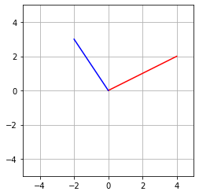
1.1 Exercises¶
# import 3d plotting tools
from mpl_toolkits.mplot3d import Axes3D
v3_1 = np.array([3,0,-4])
v3_2 = np.array([-1,1,3])
fig = plt.figure(figsize=plt.figaspect(1))
ax = fig.add_subplot(111, projection='3d')
# draw vectors
ax.plot([0,v3_1[0]],[0,v3_1[1]],[0,v3_1[2]],'b',linewidth=3)
ax.plot([0,v3_2[0]],[0,v3_2[1]],[0,v3_2[2]],'r',linewidth=3)
# guidelines
ax.plot([-5,5],[0,0],[0,0],'--',color=[.7,.7,.7])
ax.plot([0,0],[-5,5],[0,0],'--',color=[.7,.7,.7])
ax.plot([0,0],[0,0],[-5,5],'--',color=[.7,.7,.7])
ax.set_xlim3d(-5,5)
ax.set_ylim3d(-5,5)
ax.set_zlim3d(-5,5)
plt.show()
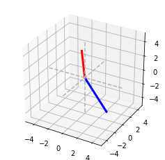
2 Adding and scalar-multiplying vectors¶
v = np.array([.5,1]) # vector
s = [1,-.5,2,.5] # scalars
for si in s:
sv = si*v
plt.plot([0,sv[0]],[0,sv[1]],'o-',linewidth=3,label='$\\lambda=%g$' %(si))
plt.axis('square')
plt.legend()
plt.axis([-3,3,-3,3])
plt.grid()
plt.show()
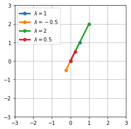
# adding vectors
v1 = np.array([-1,2])
v2 = np.array([1,1])
v3a = v1+v2
v3b = np.add(v1,v2)
v3c = np.zeros(2)
for i in range(0,2):
v3c[i] = v1[i] + v2[i]
print(v3a,v3b,v3c)
[0 3] [0 3] [0. 3.]
plt.plot([0,v1[0]],[0,v1[1]],label='$v_1$',linewidth=3)
plt.plot([0,v2[0]],[0,v2[1]],label='$v_2$',linewidth=3)
plt.plot([0,v3a[0]],[0,v3a[1]],label='$v_1+v_2$',linewidth=3)
plt.axis('square')
plt.legend()
plt.axis([-2,2,-2,4])
plt.grid()
plt.show()
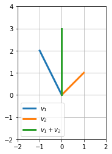
2.1 Exercise¶
plt.plot([0,v1[0]],[0,v1[1]],label='$v_1$',linewidth=3)
plt.plot([0,v2[0]]+v1[0],[0,v2[1]]+v1[1],label='$v_2$',linewidth=3)
plt.plot([0,v3a[0]],[0,v3a[1]],label='$v_1+v_2$',linewidth=3)
str1 = sym.latex(sym.sympify(v1))
str2 = sym.latex(sym.sympify(v2))
str3 = sym.latex(sym.sympify(v3a))
display(Math('%s+%s=%s' %(str1,str2,str3)))
plt.axis('square')
plt.legend()
plt.axis([-2,2,-2,4])
plt.grid()
plt.show()
\[\displaystyle \left[\begin{matrix}-1 & 2\end{matrix}\right]+\left[\begin{matrix}1 & 1\end{matrix}\right]=\left[\begin{matrix}0 & 3\end{matrix}\right]\]
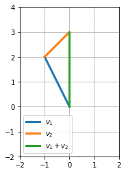
3 The dot product¶
v = np.arange(10,20,3)
w = np.arange(5,15,3)
print(w)
dp1 = 0
for i in range(0,len(v)):
dp1 = dp1 + v[i]*w[i]
[ 5 8 11 14]
dp2 = np.sum( np.multiply(v,w) )
dp3 = np.dot(v,w)
print(dp1,dp2,dp3)
596 596 596
3.1 Exercise¶
# write a function that takes two vectors, tests whether the dot product is valid between them, and returns the dot product or gives an error message
def mydotproduct(v,w):
# squeeze out singleton dimensions
v = np.squeeze(v)
w = np.squeeze(w)
# check whether they are the same size
if len(v)!=len(w):
raise ValueError('Vectors must have the same length!')
display(Math('v^Tw = %s' %np.dot(v,w)))
v1 = np.random.randn(1,10)
v2 = np.random.randn(10,1)
# np.shape(np.squeeze(v2))
mydotproduct(v1,v2)
\[\displaystyle v^Tw = 1.9462911032064218\]
4 Dot product application: Correlation coefficient¶
# data
mikes_courses = [4,5,8,2,9,9,1,3,7]
life_happiness = [6,7,9,3,9,3,1,6,7]
# mean-center
m = mikes_courses - np.mean(mikes_courses)
l = life_happiness - np.mean(life_happiness)
# compute correlation
numer = np.dot(m,l)
denom = np.sqrt( np.dot(m,m) ) * np.sqrt(np.dot(l,l))
r1 = numer/denom
# confirm with numpy function
r2 = np.corrcoef(m,l)[1][0]
# show the data!
plt.plot(mikes_courses,life_happiness,'ms',label='r=%s' %np.round(r1,2))
plt.axis([0,10,0,10])
plt.gca().set_aspect('equal')
plt.xlabel('Number of Mike\'s courses taken')
plt.ylabel('Life happiness')
plt.legend()
plt.show()
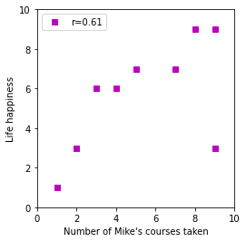
5 The outer product¶
v1 = np.random.randn(50)
v2 = np.random.randn(50)
np.dot(v1,v2)
10.363186821952894
op = np.outer(v1,v2)
# display(Math(sym.latex(sym.sympify(op))))
plt.imshow(op)
plt.show()
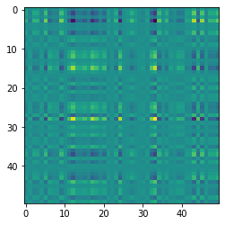
5.1 Exercise¶
v = np.arange(1,10)
w = np.arange(1,5)
print(np.outer(v,w))
print(np.outer(w,v))
[[ 1 2 3 4]
[ 2 4 6 8]
[ 3 6 9 12]
[ 4 8 12 16]
[ 5 10 15 20]
[ 6 12 18 24]
[ 7 14 21 28]
[ 8 16 24 32]
[ 9 18 27 36]]
[[ 1 2 3 4 5 6 7 8 9]
[ 2 4 6 8 10 12 14 16 18]
[ 3 6 9 12 15 18 21 24 27]
[ 4 8 12 16 20 24 28 32 36]]
# show that svw=vsw=vws
s = 4
left = s*np.outer(v, w)
middle = np.outer(v*s, w)
right = np.outer(v, w)*s
print(np.sum(np.abs(left-middle)))
print(np.sum(np.abs(middle-right)))
print(np.sum(np.abs(left-right)))
0
0
0
6 Matrix multiplication¶
A = np.random.randn(14,10)
B = np.random.randn(14,10)
C = np.random.randn(10,14)
try:
print((A@B).shape)
except Exception as E:
print("Exception: {}".format(type(E).__name__))
print("Exception message: {}".format(E))
print((A@C).shape)
print((C@A).shape)
Exception: ValueError
Exception message: matmul: Input operand 1 has a mismatch in its core dimension 0, with gufunc signature (n?,k),(k,m?)->(n?,m?) (size 14 is different from 10)
(14, 14)
(10, 10)
6.1 Exercise¶
def matrixMultiplication(A,B):
# get matrix sizes
szA = np.shape(A)
szB = np.shape(B)
# give error if sizes don't match
if szA[1]!=szB[0]:
raise ValueError('"Inner" dimensions don''t match!')
# initialize
C = np.zeros((szA[0],szB[1]))
# compute!
for i in range(szA[0]):
for j in range(szB[1]):
C[i,j] = np.dot(A[i,:],B[:,j])
return C
A = np.random.randn(4,6)
B = np.random.randn(6,2)
C1 = matrixMultiplication(A,B)
C2 = A@B
print(np.round(C1-C2))
[[ 0. 0.]
[-0. 0.]
[ 0. 0.]
[ 0. 0.]]
7 Transposing matrices and vectors¶
r = np.random.randn(1,10)
c = np.random.randn(10,1)
print(np.shape(r))
print(np.shape(c))
(1, 10)
(10, 1)
r_flip1 = np.transpose(r)
r_flip2 = r.T
print(np.shape(r_flip2))
(10, 1)
# matrix and image
mat = np.random.randn(8,4)
matT = mat.T
fig,ax = plt.subplots(1,2)
ax[0].imshow(mat)
ax[0].set_title('M')
ax[1].imshow(matT)
ax[1].set_title('M$^T$')
# set common properties
for i in ax:
i.set_yticks([])
i.set_xticks([])
plt.show()
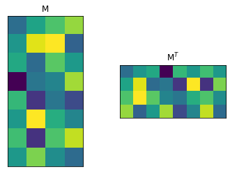
7.1 Exercise¶
# show that a matrix times its transpose is square-symmetric
# sizes
m = 10
n = 14
amat = np.random.randn(m,n)
# palindromic variables! (literal and referent!)
amatama = amat@amat.T
# show it's square
print(np.shape(amatama))
# show it's symmetric
amatama - amatama.T
(10, 10)
array([[0., 0., 0., 0., 0., 0., 0., 0., 0., 0.],
[0., 0., 0., 0., 0., 0., 0., 0., 0., 0.],
[0., 0., 0., 0., 0., 0., 0., 0., 0., 0.],
[0., 0., 0., 0., 0., 0., 0., 0., 0., 0.],
[0., 0., 0., 0., 0., 0., 0., 0., 0., 0.],
[0., 0., 0., 0., 0., 0., 0., 0., 0., 0.],
[0., 0., 0., 0., 0., 0., 0., 0., 0., 0.],
[0., 0., 0., 0., 0., 0., 0., 0., 0., 0.],
[0., 0., 0., 0., 0., 0., 0., 0., 0., 0.],
[0., 0., 0., 0., 0., 0., 0., 0., 0., 0.]])
8 Various special matrices¶
# identity
I = np.eye(4)
print(I)
[[1. 0. 0. 0.]
[0. 1. 0. 0.]
[0. 0. 1. 0.]
[0. 0. 0. 1.]]
# zeros
Z = np.zeros((5,5))
print(Z)
[[0. 0. 0. 0. 0.]
[0. 0. 0. 0. 0.]
[0. 0. 0. 0. 0.]
[0. 0. 0. 0. 0.]
[0. 0. 0. 0. 0.]]
# diagonal
D = np.diag([1,3,2,4,5])
print(D)
d = np.diagonal(D)
print(d)
[[1 0 0 0 0]
[0 3 0 0 0]
[0 0 2 0 0]
[0 0 0 4 0]
[0 0 0 0 5]]
[1 3 2 4 5]
# triangular matrix
T = np.random.randn(15,15)
plt.imshow(np.triu(T))
plt.show()
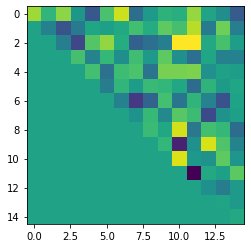
8.1 Exercise¶
# matrix of random integers
intmat = np.random.randint(-4,5,(4,4))
I4 = np.eye(4)
upper4 = np.triu(np.random.randn(4,4))
print(intmat.dtype)
print('\n\n')
print((intmat@I4).dtype)
print('\n\n')
print(intmat@upper4)
int64
float64
[[ 2.81507237 0.91700058 4.20374781 2.03875853]
[-2.81507237 -1.51716666 -6.56345538 -4.47271051]
[ 2.81507237 1.00273859 -0.79287565 -5.86014242]
[ 2.11130428 1.28791652 1.51222502 -1.40155646]]
# figure out what a Toeplitz matrix is
from scipy.linalg import toeplitz
v = np.arange(1,6)
toe = toeplitz(v)
print(toe)
plt.imshow(toe)
plt.show()
[[1 2 3 4 5]
[2 1 2 3 4]
[3 2 1 2 3]
[4 3 2 1 2]
[5 4 3 2 1]]
9 Matrix inverse¶
# random matrices are nearly always invertible
m = 5
A = np.random.randint(-5,6,(m,m))
Ainv = np.linalg.inv(A)
fig,ax = plt.subplots(1,3)
ax[0].imshow(A)
ax[0].set_title('A')
ax[1].imshow(Ainv)
ax[1].set_title('A$^{-1}$')
ax[2].imshow(A@Ainv)
ax[2].set_title('AA$^{-1}$')
for i in ax:
i.axis('off')
plt.show()
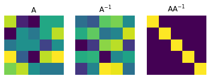
# also no inverse for square matrix with repeated columns
A = np.random.randint(-5, 6, (m, m))
A[:, 0] = A[:, 1]
print(A)
try:
Ainv = np.linalg.inv(A)
except Exception as E:
print("\n{}: {}".format(type(E).__name__, E))
[[ 4 4 -1 4 5]
[ 4 4 -1 -2 1]
[-2 -2 -2 5 -1]
[-2 -2 0 -5 1]
[ 2 2 2 4 -1]]
LinAlgError: Singular matrix
9.1 Exercise¶
# pinv with repeated column in square matrix, and with non-square matrix
m = 5
A = np.random.randint(-5,6,(m,m))
A[:,0] = A[:,1]
print(A)
# A = np.random.randn(m,m+2)
# compute pseudo-inverse
Ainv = np.linalg.pinv(A)
fig,ax = plt.subplots(1,3)
ax[0].imshow(A)
ax[0].set_title('A')
ax[1].imshow(Ainv)
ax[1].set_title('A$^{*}$')
ax[2].imshow(A@Ainv)
ax[2].set_title('AA$^{*}$')
for i in ax:
i.axis('off')
plt.show()
[[-4 -4 5 5 2]
[ 4 4 1 -3 3]
[-3 -3 0 2 0]
[ 0 0 -5 -3 5]
[-1 -1 -5 -5 -1]]
10 Solving a system of equations¶
\[\begin{split}
X\beta = y\\
\beta = (X^TX)^{-1}X^Ty
\end{split}\]
X = np.array([ [2,1,-1],[3,4,2],[1,-5,-2] ])
y = np.array([1,13,0])
b1 = np.linalg.inv(X.T@X) @ (X.T@y)
b2 = np.linalg.solve(X,y)
b1, b2
(array([ 3., -1., 4.]), array([ 3., -1., 4.]))
10.1 Exercise¶
# visualize the three possible outcomes of simultaneous equations
# 1) one solution
X1 = np.array([ [3,-1],[-1,1] ])
y1 = np.array([6,2])
# 2) infinite solutions
X2 = np.array([ [3,-1],[1.5,-.5] ])
y2 = np.array([6,3])
# 3) no solutions
X3 = np.array([ [3,-1],[1.5,-.5] ])
y3 = np.array([6,2])
# generate the plot
xlim = np.array([0, 10])
# 1) Case 1: one unique solution
# convert equations into y=mx+b form
yy1 = -X1[0, 0]/X1[0, 1]*xlim + y1[0]/X1[0, 1]
yy2 = -X1[1, 0]/X1[1, 1]*xlim + y1[1]/X1[1, 1]
# plot
plt.plot(xlim, yy1, 'b', label='eq 1')
plt.plot(xlim, yy2, 'r', label='eq 2')
# solve and plot
b1 = np.linalg.solve(X1, y1)
plt.plot(b1[0], b1[1], 'ko', markersize=10, label='Solution')
plt.legend()
plt.grid()
plt.show()
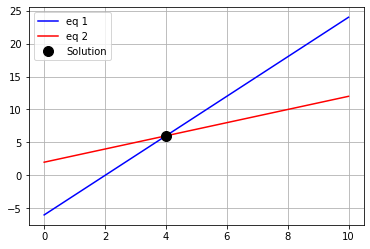
# Case 2: infinite solutions
# convert equations into y=mx+b form
yy1 = -X2[0, 0]/X2[0, 1]*xlim + y2[0]/X2[0, 1]
yy2 = -X2[1, 0]/X2[1, 1]*xlim + y2[1]/X2[1, 1]
# plot
plt.plot(xlim, yy1, 'b', label='eq 1')
plt.plot(xlim, yy2, 'r--', label='eq 2')
# solve and plot
try:
b1 = np.linalg.solve(X2, y2)
except Exception as E:
print("\n{}: {}".format(type(E).__name__, E))
plt.plot(b1[0], b1[1], 'ko', markersize=10, label='Solution')
plt.legend()
plt.grid()
plt.show()
LinAlgError: Singular matrix
# Case 3: no solutions
# convert equations into y=mx+b form
yy1 = -X3[0, 0]/X3[0, 1]*xlim + y3[0]/X3[0, 1]
yy2 = -X3[1, 0]/X3[1, 1]*xlim + y3[1]/X3[1, 1]
# plot
plt.plot(xlim, yy1, 'b', label='eq 1')
plt.plot(xlim, yy2, 'r--', label='eq 2')
# solve and plot
try:
b1 = np.linalg.solve(X3, y3)
except Exception as E:
print("\n{}: {}".format(type(E).__name__, E))
plt.plot(b1[0], b1[1], 'ko', markersize=10, label='Solution')
plt.legend()
plt.grid()
plt.show()
LinAlgError: Singular matrix
11 Visualizing matrix-vector multiplication¶
M = np.array([ [.5,1],
[1,.5] ])
v = np.array([1,2])
v = np.random.randn(2)
# v = np.array([1,1])
# v = np.array([1,-1])
Mv = M@v
plt.plot([0,v[0]],[0,v[1]],'b',label='v',linewidth=2)
plt.plot([0,Mv[0]],[0,Mv[1]],'r',label='Mv',linewidth=2)
plt.axis('square')
plt.axis([-5,5,-5,5])
plt.legend()
plt.grid()
plt.show()
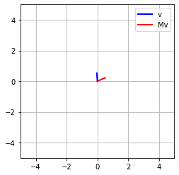
11.1 Exercise¶
v1 = np.linspace(-2,2,40)
for i in v1:
v = np.array([1,i])
Mv = M@v
plt.plot([0,v[0]],[0,v[1]],color=[1-abs(i)/4,.5,abs(i)/2],alpha=.8)
plt.plot([0,Mv[0]],[0,Mv[1]],color=[1-abs(i)/2,abs(i)/4,.5])
plt.axis('square')
plt.axis('off')
plt.show()
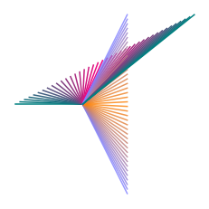
12 Eigenvalues and eigenvectors¶
# the matrix
M = np.random.randint(-5,5,(5,5))
M = M@M.T
# its eigendecomposition
eigvals,eigvecs = np.linalg.eig(M)
print(eigvals)
# visualize the matrices
fig,ax = plt.subplots(1,3)
ax[0].imshow(M)
ax[0].set_title('The matrix')
ax[1].imshow(eigvecs)
ax[1].set_title('Eigenvectors')
ax[2].imshow(np.diag(eigvals))
ax[2].set_title('Eigenvalues')
for i in ax:
i.axis('off')
plt.show()
[9.16580782e+01 7.16929499e+01 4.81746555e+01 4.13710545e-04
2.47390264e+00]
# but what do they mean??
Mv = M@eigvecs[:,0]
lv = eigvals[0] * eigvecs[:,0]
print(Mv)
print(lv)
[24.50879044 10.55495864 50.41416712 5.67222492 71.52169576]
[24.50879044 10.55495864 50.41416712 5.67222492 71.52169576]
12.1 Exercise¶
# part 1: 2x2 symmetric matrix. plot Mv and lv
M = np.array([ [1,2],[2,1] ])
d,V = np.linalg.eig(M)
lv = d[0]*V[:,0] # change to 1 without changing d
Mv = M@V[:,0]
plt.plot([0,lv[0]],[0,lv[1]],'b',label='v',linewidth=4)
plt.plot([0,Mv[0]],[0,Mv[1]],'r:',label='Mv',linewidth=3)
plt.axis('square')
plt.axis([-3,3,-3,3])
plt.legend()
plt.grid()
plt.show()
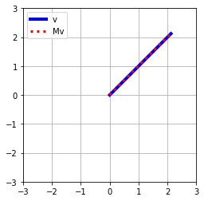
# part 2: 6x6 symmetric matrix. compute all pairwise dot products of eigenvectors
# the matrix
m = 6
M = np.random.randn(m,m)
M = M@M.T
# its eigendecomposition
d,V = np.linalg.eig(M)
dps = np.zeros((m,m))
for i in range(0,m):
for j in range(0,m):
dps[i,j] = np.dot(V[:,i],V[:,j])
print(np.round(dps,2))
[[ 1. 0. 0. -0. 0. -0.]
[ 0. 1. -0. -0. -0. 0.]
[ 0. -0. 1. 0. -0. 0.]
[-0. -0. 0. 1. -0. 0.]
[ 0. -0. -0. -0. 1. -0.]
[-0. 0. 0. 0. -0. 1.]]
13 Singular value decomposition¶
# SVD of Einstein
from PIL import Image
ein = Image.open('einstein.jpg')
plt.imshow(ein)
plt.show()
# SVD is defined on 2D matrices
print( np.shape(ein) )
ein = np.mean(ein,2)
print( np.shape(ein) )
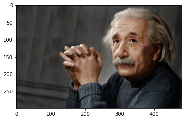
(300, 480, 3)
(300, 480)
# Take the SVD
U,s,V = np.linalg.svd(ein)
# image the results
fig,ax = plt.subplots(1,3)
ax[0].imshow(U)
ax[0].set_title('U')
ax[1].imshow(np.diag(np.log(s)))
ax[1].set_title('$\\Sigma$')
ax[2].imshow(V)
ax[2].set_title('V$^T$')
plt.show()
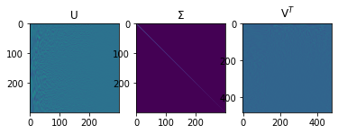
# plot the eigenspectrum
plt.plot(s,'ks-',markerfacecolor='w')
plt.xlim([-1,50])
plt.xlabel('Component number')
plt.ylabel('Singular value')
plt.title('Eigenspectrum of Einstein')
plt.show()
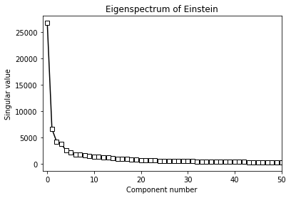
13.1 Exercise¶
# reconstruct ein, then shuffle the singular values
# reconstruct S from s
S = np.zeros(np.shape(ein))
for i in range(0,len(s)):
S[i,i] = s[i]
rein = U@S@V
plt.subplot(1,2,1)
plt.imshow(ein)
plt.axis('off')
plt.title('Original')
plt.subplot(1,2,2)
plt.imshow(rein)
plt.axis('off')
plt.title('$U\\Sigma V^T$')
plt.show()
# reconstruct S from s
S = np.zeros(np.shape(ein))
randorder = np.random.permutation(len(s))
for i in range(0, len(s)):
S[i, i] = s[randorder[i]]
rein = U@S@V
for i in range(5, len(s)): # 0-10 and 5-end
S[i, i] = s[i]
lein = U@S@V
plt.subplot(1, 3, 1)
plt.imshow(ein)
plt.axis('off')
plt.title('Original')
plt.subplot(1, 3, 2)
plt.imshow(rein)
plt.axis('off')
plt.title('$U\\Sigma V^T$ (shuffled $\\sigma$)')
plt.subplot(1, 3, 3)
plt.imshow(lein)
plt.axis('off')
plt.title('Less important')
plt.show()
14 Linear algebra BUG HUNT solution¶
14.1 create a column vector¶
cv = np.array([ [-2], [3] ])
display(Math(sym.latex(sym.sympify(cv))))
\[\begin{split}\displaystyle \left[\begin{matrix}-2\\3\end{matrix}\right]\end{split}\]
14.2 visualize scalar-vector multiplication¶
v = np.array([-2,2])
s = .7
sv = s*v
plt.plot([0,v[0]],[0,v[1]],'ro-',linewidth=3,label='v')
plt.plot([0,sv[0]],[0,sv[1]],'o-',linewidth=3,label='sv')
plt.axis('square')
plt.legend()
plt.axis([-3,3,-3,3])
plt.grid()
plt.show()
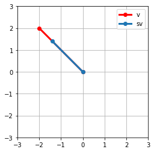
14.3 algorithm to compute the dot product¶
v = np.random.randn(7)
w = np.random.randn(7)
dp1 = 0
for i in range(0,len(v)):
dp1 += v[i]*w[i]
dp2 = np.dot(v,w)
print(str(dp1) + '\t' + str(dp2))
0.7569954769366126 0.7569954769366126
14.4 number of data points¶
n = 10
# data
data1 = np.arange(0,n) + np.random.randn(n)
data2 = np.arange(0,n) + np.random.randn(n)
# mean-center
data1 -= np.mean(data1)
data2 -= np.mean(data2)
# compute correlation
numer = np.dot(data1,data2)
denom = np.sqrt( np.dot(data1,data1) ) * np.sqrt(np.dot(data2,data2))
r1 = numer/denom
# confirm with numpy function
r2 = np.corrcoef(data1,data2)[1][0]
print(r1)
print(r2)
0.8754461463466162
0.8754461463466159
14.5 outer product computation¶
o1 = np.random.randint(0,10,7)
o2 = np.random.randint(0,10,4)
outermat = np.zeros((len(o1),len(o2)))
for i in range(len(o1)):
outermat[i,:] = o1[i]*o2
print(outermat-np.outer(o1,o2))
[[0. 0. 0. 0.]
[0. 0. 0. 0.]
[0. 0. 0. 0.]
[0. 0. 0. 0.]
[0. 0. 0. 0.]
[0. 0. 0. 0.]
[0. 0. 0. 0.]]
14.6 matrix multiplication¶
A = np.random.randn(5,5)
I = np.eye(5)
print(A)
print(' ')
print(A@I)
[[-0.90266885 0.8814279 -0.5078707 -0.18544823 -1.24509616]
[ 1.44186368 0.35130493 0.61810934 0.86302207 1.03846725]
[ 0.02620677 0.17736263 -1.29205058 -0.87550889 -1.30667276]
[-0.53155989 0.69150644 0.23249776 -0.61384145 0.07851994]
[-1.06853249 0.05522767 -0.20411239 0.83051872 0.45931676]]
[[-0.90266885 0.8814279 -0.5078707 -0.18544823 -1.24509616]
[ 1.44186368 0.35130493 0.61810934 0.86302207 1.03846725]
[ 0.02620677 0.17736263 -1.29205058 -0.87550889 -1.30667276]
[-0.53155989 0.69150644 0.23249776 -0.61384145 0.07851994]
[-1.06853249 0.05522767 -0.20411239 0.83051872 0.45931676]]
14.7 matrix multiplication¶
A = np.random.randn(8,5)
I = np.eye(8)
I@A
array([[ 0.44984419, -0.09029573, -1.13793164, 0.09948104, 1.35824744],
[ 0.35909321, 0.31177402, -0.94546096, -0.19509469, 0.19294578],
[ 0.7127431 , 1.03719885, 1.76264662, 0.6459625 , 0.86061552],
[-2.20636603, -0.21649087, -1.00707728, 0.27509051, 1.94552847],
[ 0.32371966, 1.05704634, -0.12483624, 1.48524193, -1.57338762],
[-0.22028993, -1.48499723, -2.19040162, 0.62230401, -0.66534879],
[ 0.84944686, -0.59099564, -2.88218321, 0.32148423, 0.75126535],
[-1.26524202, -1.38691637, -0.20327503, -0.7547095 , 0.12218538]])
14.8 random matrices are invertible¶
A = np.random.randint(-5,6,(5,5))
Ainv = np.linalg.inv(A)
np.round(A@Ainv,4)
array([[ 1., 0., 0., 0., 0.],
[ 0., 1., -0., 0., 0.],
[ 0., 0., 1., -0., 0.],
[-0., 0., -0., 1., 0.],
[ 0., 0., -0., 0., 1.]])
14.9 plot the eigenspectrum¶
# the matrix
M = np.random.randint(-5,5,(5,5))
M = M@M.T
# its eigendecomposition
eigvals,eigvecs = np.linalg.eig(M)
plt.plot(np.matrix.flatten(eigvals),'s-')
plt.xlabel('Components')
plt.ylabel('Eigenvalues')
plt.show()
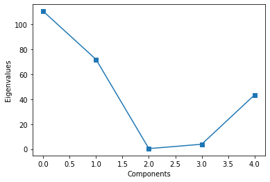
14.10 Reconstruct a matrix based on its SVD¶
A = np.random.randint(-10,11,(10,20))
U,s,V = np.linalg.svd(A)
# reconstruct S
# S = np.diag(s)
S = np.zeros(np.shape(A))
for i in range(len(s)):
S[i,i] = s[i]
Arecon = U@S@V
fig,ax = plt.subplots(1,3)
ax[0].imshow(A,vmin=-10,vmax=10)
ax[0].set_title('A')
ax[1].imshow(Arecon,vmin=-10,vmax=10)
ax[1].set_title('Arecon')
ax[2].imshow(A-Arecon,vmin=-10,vmax=10)
ax[2].set_title('A-Arecon')
plt.show()
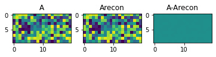